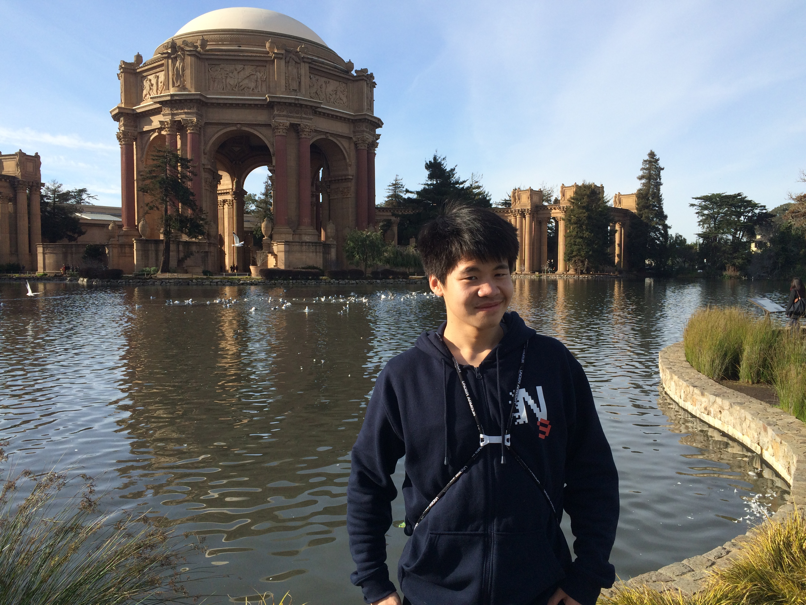
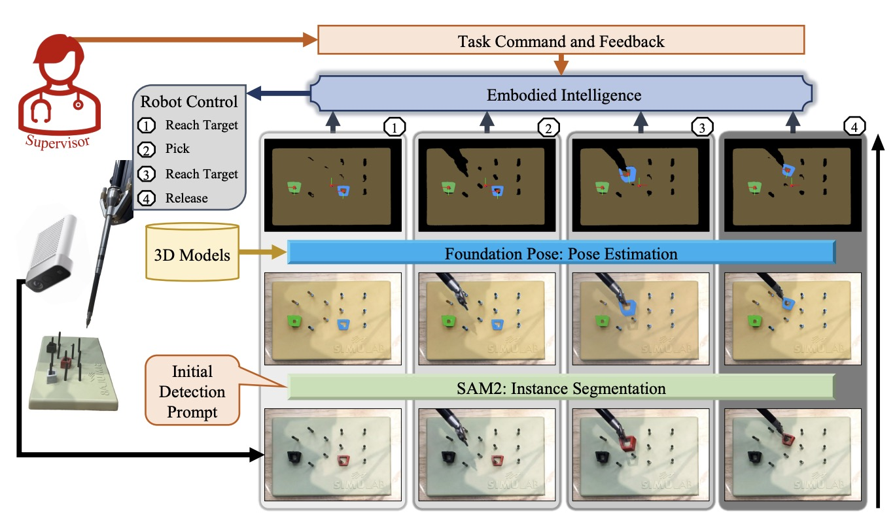
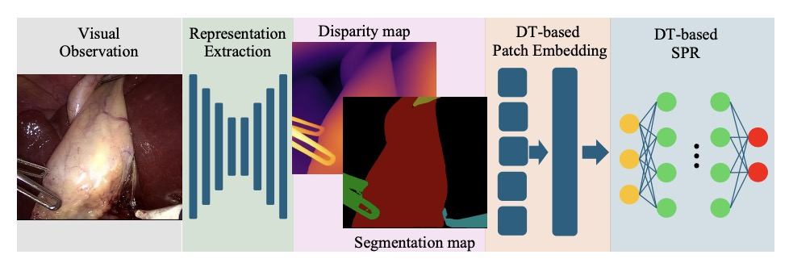
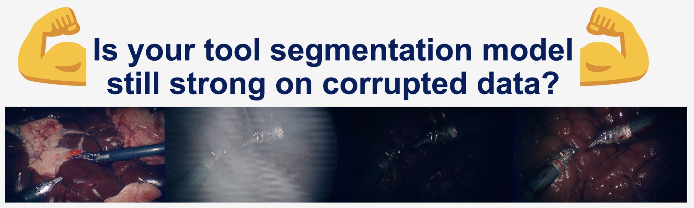
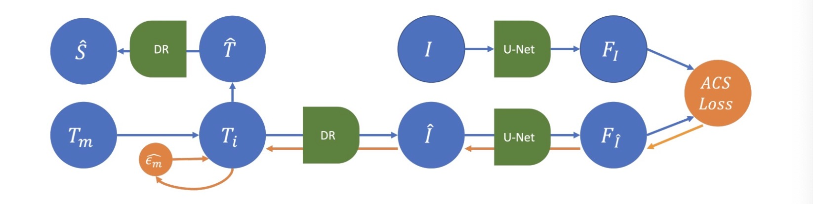
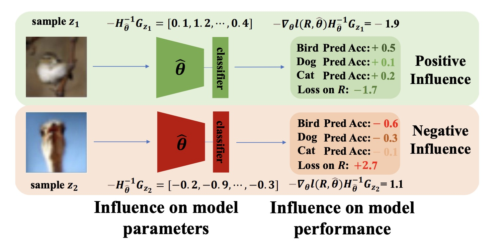
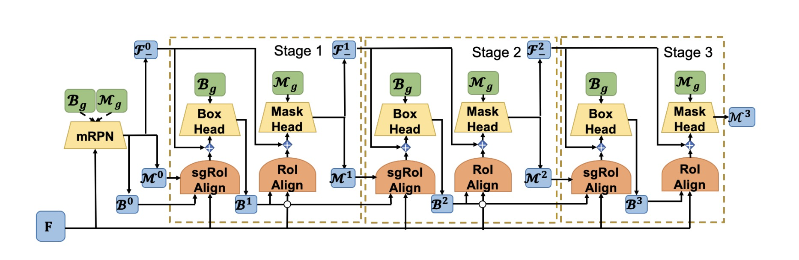
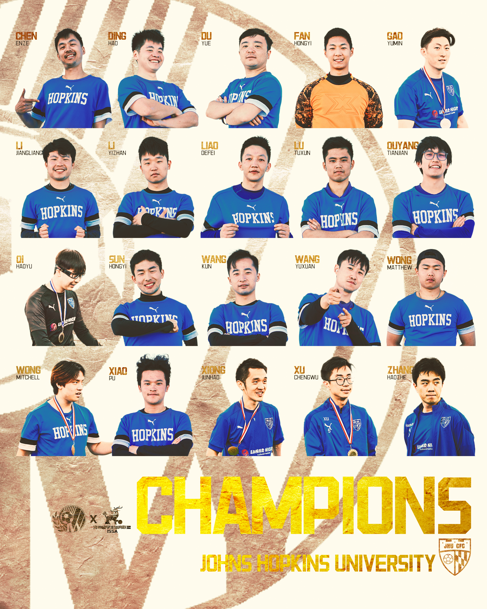
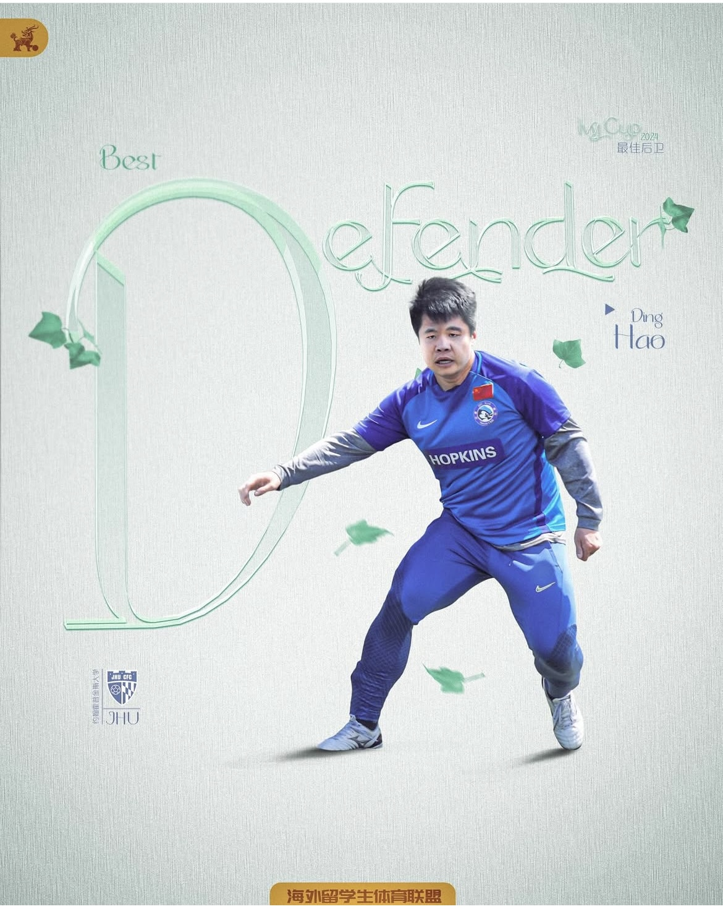

My contact information
Email: hding2455@gmail.com
LinkedIn Google Scholar GitHub
I am a Ph.D. candidate in the Department of Computer Science at Johns Hopkins University. I received my bachelor's degree from Tsinghua University in 2018.
On research, I am passionate robotics researcher working to push the boundary of autonomy in surgical domain.
Outside of research, I have a big passion for soccer and I'm now playing for Johns Hopkins University Chinese Football Club.
Selected Research
I am passionate robotics researcher working to push the boundary of autonomy in surgical domain. My work focuses on computer vision (robot perception) and embodied Intelligence for robotics automation. During my Ph.D. study, my target is to digital twin-based framework that relies on robust low-level processing of vision perceptions to ensure the robustness of high-level surgical analysis and automation. Feel free to explore my research, projects, and publications! The list of publications can be found on my google scholar
Embodied Intelligence
-
Towards Robust Automation of Surgical Systems via Digital Twin-based Scene Representations from Foundation Models (COLAS-MICCAI 2025) Paper
Large language model-based (LLM) agents are emerging as a powerful enabler of robust embodied intelligence due to their capability of planning complex action sequences. Sound planning ability is necessary for robust automation in many task domains, but especially in surgical automation. These agents rely on a highly detailed natural language representation of the scene. Thus, to leverage the emergent capabilities of LLM agents for surgical task planning, developing similarly powerful and robust perception algorithms is necessary to derive a detailed scene representation of the environment from visual input. Previous research has focused primarily on enabling LLM-based task planning while adopting simple yet severely limited perception solutions to meet the needs for bench-top experiments but lack the critical flexibility to scale to less constrained settings. In this work, we propose an alternate perception approach -- a digital twin-based machine perception approach that capitalizes on the convincing performance and out-of-the-box generalization of recent vision foundation models. Integrating our digital twin-based scene representation and LLM agent for planning with the dVRK platform, we develop an embodied intelligence system and evaluate its robustness in performing peg transfer and gauze retrieval tasks. Our approach shows strong task performance and generalizability to varied environment settings. Despite convincing performance, this work is merely a first step towards the integration of digital twin-based scene representations. Future studies are necessary for the realization of a comprehensive digital twin framework to improve the interpretability and generalizability of embodied intelligence in surgery.

Demo video: digital twin-based agent performing peg transfer tasks.
Demo video: digital twin-based agent performing gauze retrival tasks.
Computer Vision
-
Towards Robust Algorithms for Surgical Phase Recognition via Digital Twin Representations (DT4H-MICCAI 2025) Paper
Surgical phase recognition (SPR) is an integral component of surgical data science, enabling high-level surgical analysis. End-to-end trained neural networks that predict the surgical phase directly from videos have shown excellent performance on benchmarks. However, these models struggle with robustness due to non-causal associations in the training set. Our goal is to improve model robustness to variations in the surgical videos by leveraging the digital twin (DT) paradigm – an intermediary layer to separate high-level analysis (SPR) from low-level processing. As a proof of concept, we present a DT representation-based framework for SPR from videos. The framework employs vision foundation models with reliable low-level scene understanding to craft DT representation. We embed the DT representation in place of raw video inputs in the state-of-the-art SPR model. The framework is trained on the Cholec80 dataset and evaluated on out-of-distribution (OOD) and corrupted test samples. Contrary to the vulnerability of the baseline model, our framework demonstrates strong robustness on both OOD and corrupted samples, with a video-level accuracy of 80.3 on a highly corrupted Cholec80 test set, 67.9 on the challenging CRCD dataset, and 99.8 on an internal robotic surgery dataset, outperforming the baseline by 3.9, 16.8, and 90.9 respectively. We also find that using DT representation as an augmentation to the raw input can significantly improve model robustness. Our findings lend support to the thesis that DT representations are effective in enhancing model robustness. Future work will seek to improve the feature informativeness and incorporate interpretability for a more comprehensive framework.

-
SegSTRONG-C: Segmenting Surgical Tools Robustly On Non-adversarial Generated Corruptions -- An EndoVis'24 Challenge (Challenge hosted on MICCAI2024, paper in submission to TMI) Website Paper
Vision-based segmentation of the robotic tool during robot-assisted surgery enables downstream applications, such as augmented reality feedback, while allowing for inaccuracies in robot kinematics. With the introduction of deep learning, many methods were presented to solve instrument segmentation directly and solely from images. While these approaches made remarkable progress on benchmark datasets, fundamental challenges pertaining to their robustness remain. We present CaRTS, a causality-driven robot tool segmentation algorithm, that is designed based on a complementary causal model of the robot tool segmentation task. Rather than directly inferring segmentation masks from observed images, CaRTS iteratively aligns tool models with image observations by updating the initially incorrect robot kinematic parameters through forward kinematics and differentiable rendering to optimize image feature similarity end-to-end. We benchmark CaRTS with competing techniques on both synthetic as well as real data from the dVRK, generated in precisely controlled scenarios to allow for counterfactual synthesis. On training-domain test data, CaRTS achieves a Dice score of 93.4 that is preserved well (Dice score of 91.8) when tested on counterfactually altered test data, exhibiting low brightness, smoke, blood, and altered background patterns. This compares favorably to Dice scores of 95.0 and 86.7, respectively, of the SOTA image-based method. Future work will involve accelerating CaRTS to achieve video framerate and estimating the impact occlusion has in practice. Despite these limitations, our results are promising: In addition to achieving high segmentation accuracy, CaRTS provides estimates of the true robot kinematics, which may benefit applications such as force estimation.

-
CaRTS: Causality-driven Robot Tool Segmentation from Vision and Kinematics Data (MICCAI2022) Paper Rethinking causality-driven robot tool segmentation with temporal constraints (IPCAI2023) Paper Code
Vision-based segmentation of the robotic tool during robot-assisted surgery enables downstream applications, such as augmented reality feedback, while allowing for inaccuracies in robot kinematics. With the introduction of deep learning, many methods were presented to solve instrument segmentation directly and solely from images. While these approaches made remarkable progress on benchmark datasets, fundamental challenges pertaining to their robustness remain. We present CaRTS, a causality-driven robot tool segmentation algorithm, that is designed based on a complementary causal model of the robot tool segmentation task. Rather than directly inferring segmentation masks from observed images, CaRTS iteratively aligns tool models with image observations by updating the initially incorrect robot kinematic parameters through forward kinematics and differentiable rendering to optimize image feature similarity end-to-end. We benchmark CaRTS with competing techniques on both synthetic as well as real data from the dVRK, generated in precisely controlled scenarios to allow for counterfactual synthesis. On training-domain test data, CaRTS achieves a Dice score of 93.4 that is preserved well (Dice score of 91.8) when tested on counterfactually altered test data, exhibiting low brightness, smoke, blood, and altered background patterns. This compares favorably to Dice scores of 95.0 and 86.7, respectively, of the SOTA image-based method. Future work will involve accelerating CaRTS to achieve video framerate and estimating the impact occlusion has in practice. Despite these limitations, our results are promising: In addition to achieving high segmentation accuracy, CaRTS provides estimates of the true robot kinematics, which may benefit applications such as force estimation.

-
Influence Selection for Active Learning (ICCV2021) Paper
The existing active learning methods select the samples by evaluating the sample's uncertainty or its effect on the diversity of labeled datasets based on different task-specific or model-specific criteria. In this paper, we propose the Influence Selection for Active Learning(ISAL) which selects the unlabeled samples that can provide the most positive Influence on model performance. To obtain the Influence of the unlabeled sample in the active learning scenario, we design the Untrained Unlabeled sample Influence Calculation(UUIC) to estimate the unlabeled sample's expected gradient with which we calculate its Influence. To prove the effectiveness of UUIC, we provide both theoretical and experimental analyses. Since the UUIC just depends on the model gradients, which can be obtained easily from any neural network, our active learning algorithm is task-agnostic and model-agnostic. ISAL achieves state-of-the-art performance in different active learning settings for different tasks with different datasets. Compared with previous methods, our method decreases the annotation cost at least by 12%, 13% and 16% on CIFAR10, VOC2012 and COCO, respectively.

-
Deeply shape-guided cascade for instance segmentation (CVPR2021) Paper Code
The key to a successful cascade architecture for precise instance segmentation is to fully leverage the relationship between bounding box detection and mask segmentation across multiple stages. Although modern instance segmentation cascades achieve leading performance, they mainly make use of a unidirectional relationship, i.e., mask segmentation can benefit from iteratively refined bounding box detection. In this paper, we investigate an alternative direction, i.e., how to take the advantage of precise mask segmentation for bounding box detection in a cascade architecture. We propose a Deeply Shape-guided Cascade (DSC) for instance segmentation, which iteratively imposes the shape guidances extracted from mask prediction at the previous stage on bounding box detection at current stage. It forms a bi-directional relationship between the two tasks by introducing three key components: (1) Initial shape guidance: A mask-supervised Region Proposal Network (mPRN) with the ability to generate class-agnostic masks; (2) Explicit shape guidance: A mask-guided region-of-interest (RoI) feature extractor, which employs mask segmentation at previous stage to focus feature extraction at current stage within a region aligned well with the shape of the instance-of-interest rather than a rectangular RoI; (3) Implicit shape guidance: A feature fusion operation which feeds intermediate mask features at previous stage to the bounding box head at current stage. Experimental results show that DSC outperforms the state-of-the-art instance segmentation cascade, Hybrid Task Cascade (HTC), by a large margin and achieves 51.8 box AP and 45.5 mask AP on COCO test-dev.

Soccer

I have been playing soccer since I was a kid. I played for Tsinghua University soccer team during my undergraduate study from 2014 to 2016. After I came to Johns Hopkins University for graduate study, I joined the Johns Hopkins University Chinese Football Club (JHU CFC) and have been playing for the team since 2018.
I took the responsibility as the team captain from 2021 to 2024. During my service. I led the team's transformation from a pick up soccer group to a more systematic soccer club with official administration, regular training, and league participation. I also led the team to win sevral championships in several soccer tournaments like 2022 Alumni Cup and 2023 Ivy Cup
Please refer to www.jhucfc.org and my personal page for the information of the team I am playing for and myself as a player in the team
Besides playing, I am a fan of Bayern Munich



I am going to graduate early in 2026 and I'm actively looking for jobs in embodied intelligence and computer vision.
Education
- Doctor of Philosophy, Computer Science, Johns Hopkins University University 2020 - 2026 (expected)
- Master of Science and Engineering, Robotics, Johns Hopkins University University 2018 - 2020
- Bachelor of Engineering, Computer Science and Technology, Tsinghua University 2014 - 2018
Work Experience
- Research Intern - United Imaging Intelligence, June 2023 - Aug 2023
- Research Intern - Sensetime, Dec 2019 - March 2021